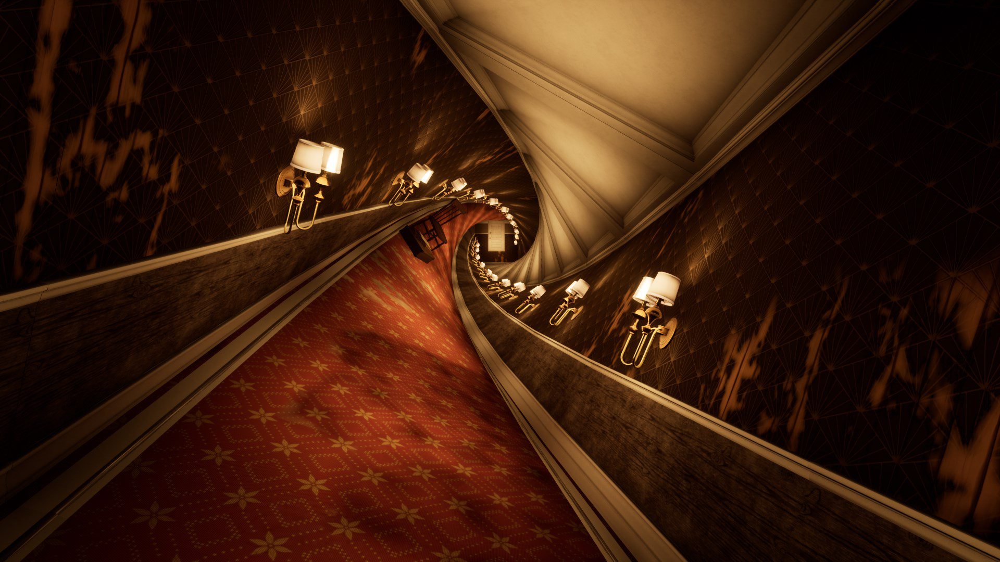
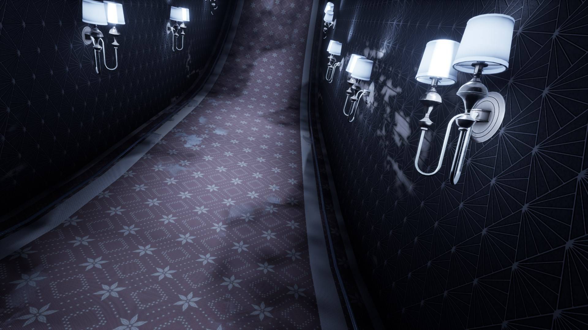
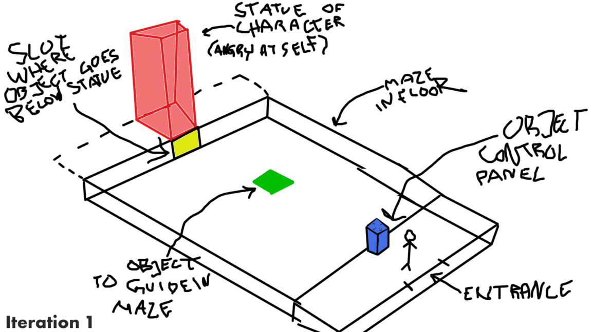
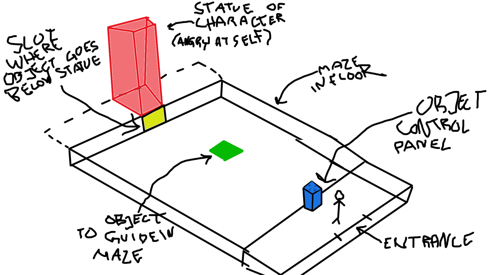
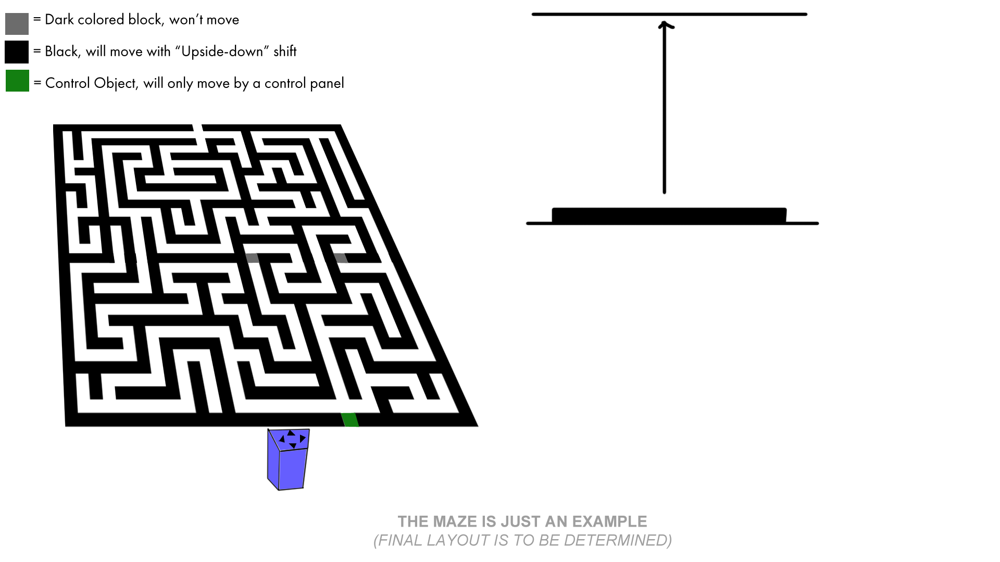
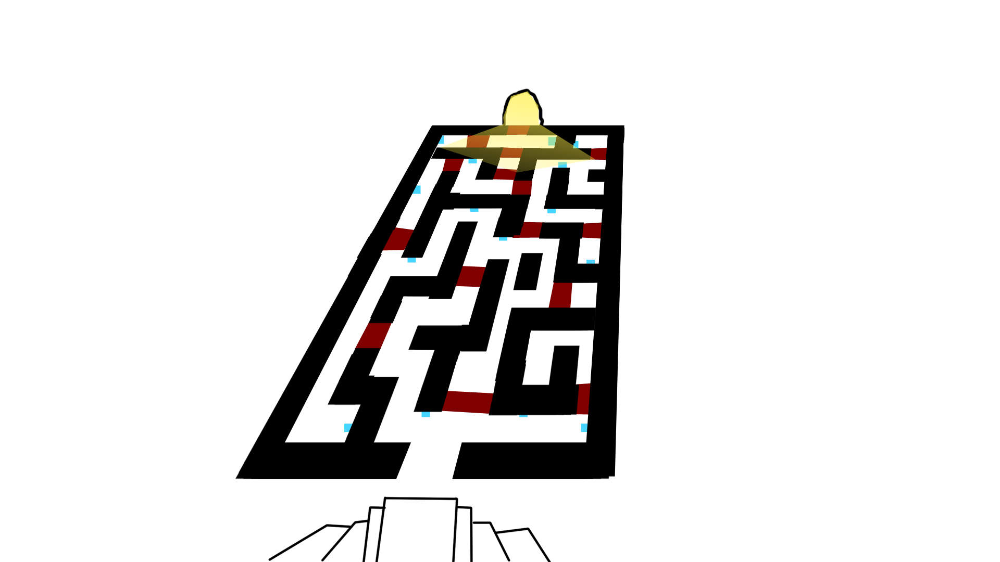
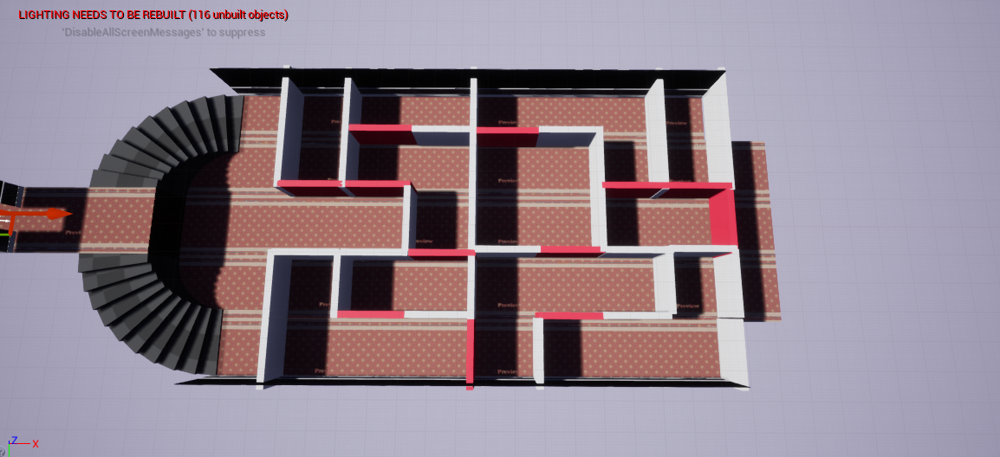
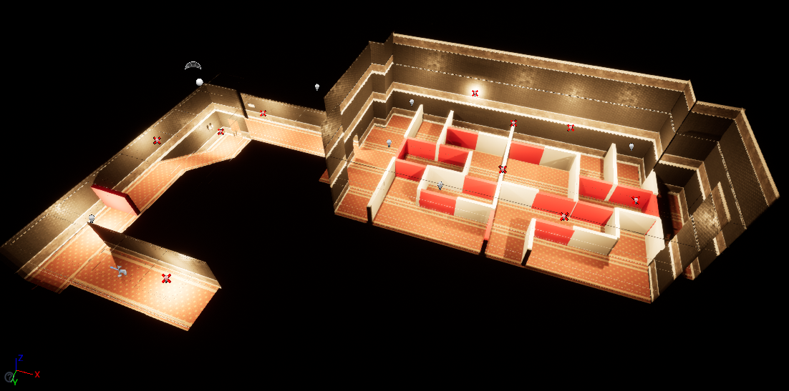
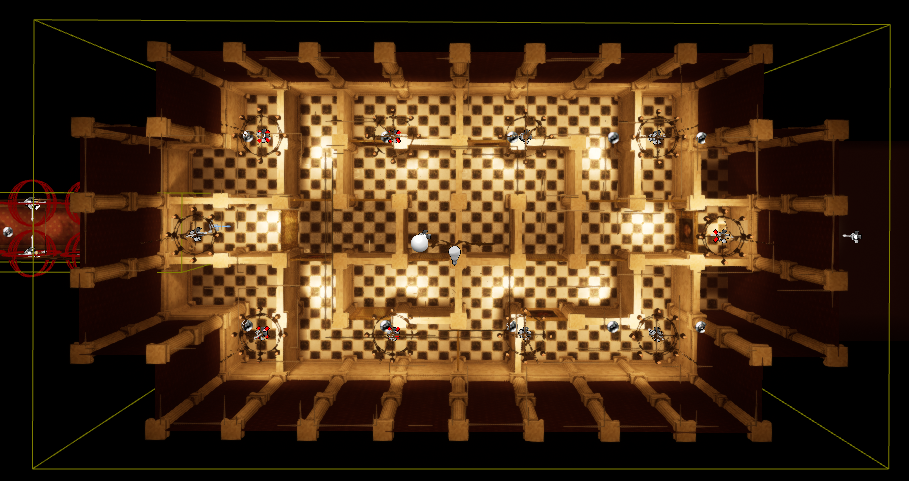

Grief
You play as Roya, a 27 year old woman born and raised in Brooklyn, New York. Not long after moving further into the city, her father passes away in a tragic accident. Although loving and caring, Roya was not there to care for her father and before his death they had a falling out which was never resolved.
Now ridden with guilt, you must traverse through different stages of grief Roya is experiencing, to reach the stage of acceptance and move on with your life. The player will have to complete specialized dreamlike puzzles through environment interaction and unnatural player controls.
Our 3rd game project in school, we were tasked to create a simulation experience where our team put an emphasis on experiencing grief through dreams. This game offers ca 20 minute experience.
Engine: Unreal Engine 4.27
Genre: Dream Simulation, Puzzle
Team Size: 10
Role: Level Design
Platform: PC

RESPONSIBILITIES
Level Design
- Creating and iterating the puzzles
- Collaborative level design process
SFX Design
- Find suitable SFX for the game
- Refine and implement SFX

Level Design
Creating & Iterating the Puzzles
Collaborative Level Design Process
Anger Puzzle: Level Iteration

About
I was the one responsible for the development of the "Anger" puzzle. The goal that I had in mind with this puzzle was to direct the anger (that the character felt) inwards, towards the character themselves.
During the development of the design of the puzzle, I collaborated with my fellow designers whenever I got stuck with the design & got a fresh pair of eyes on it, providing new ideas & solutions.

Iteration 1
In the 1st iteration of the "Anger" level, I wanted to have an object that the player steers from a "control panel" (blue) from the opposite side of the room.
The goal would be to steer the object (light-green) through a maze to a slot (yellow) that sits below a visual representation (red).

Iteration 2
In the 2nd iteration of the "Anger" level & still iterating on that the player have a "control panel" that they guide an object through. But this time around, it also includes another mechanic from another level where you could flip upside/down by looking up (and vice versa).
The player would still need to guide an object through the labyrinth but at certain sections of the labyrinth, the path would be blocked off.
To navigate through the blocked path, the player would had to flip upside/down.
When they do that, the labyrinth would flip with the player, opening up paths while on the roof that were previously blocked off.

Iteration 3
In the 3rd iteration of the "Anger" level, instead of controlling a "object" through a labyrinth with a "control panel", the player would be the object instead.
So instead of destroying a single object, the player destroys several visual representations of the player character.
This was to put an emphasis on that the player character feels anger towards themselves & is repeated by destroying the visual representations (which became paintings of the player character).
This direction were taken based on feedback from an industry professional, who mentioned that "repetition makes it important".

Iteration 4
In the 4th iteration of the "Anger" level, I started white-boxing the level in Unreal Engine. In this version, a "balcony" is added to give the player a view to give the player an overview of the "puzzle".
The twist to this puzzle is that the player has a limited amount of attempts that they can destroy the "visual representations" (red boxes). If the player doesn't reach the end, the player restarts the level at the start of the labyrinth.

Iteration 5
In the 5th iteration of the "Anger" level, the level itself had been passed around between a couple of designers within the group that did their iteration on it which had the so called "balcony" inside it (based on the previous iteration).
But we discovered through play-testing that the "balcony" made the level too easy to solve & the "balcony" was removed to increase the difficulty of level slightly.

Final Iteration
In the final iteration of the "Anger" level, the level was sent to our environment artist for our project who did a great job in making this level look amazing!
Anger Puzzle: Visual Destruction

Destroying the Visual Representation
Since anger is the focus of the level, being angry sometimes have a "side effect": destruction.
Since destruction is the focal point when you destroy the paintings of the player character, I wanted the effect when you destroy a painting to be impactful.
With the help of a programmer, I explained how I wanted the effect to happen through a document & the programmer took care of the rest.
Anger Puzzle: Displaying Attempts

Communicating Attempts
Since "Grief" has little to no User Interface, because we wanted to minimize the use of it.
I wanted to go with a diegetic approach to display how many attempts the player has by using a analog clock face & using it's arm pointing towards the attempts left.
I made the first "version" by visualizing it by modeling it in Unreal Engine and capturing it by creating it as a GIF so I could better explain my thought process.
After the concept was visualized, another programmer made clock face work in tandem with the amount of attempts that the player has.
After the player uses up their last attempt (when the clock arm points to 1), the game resets the player's position to the start of the labyrinth.